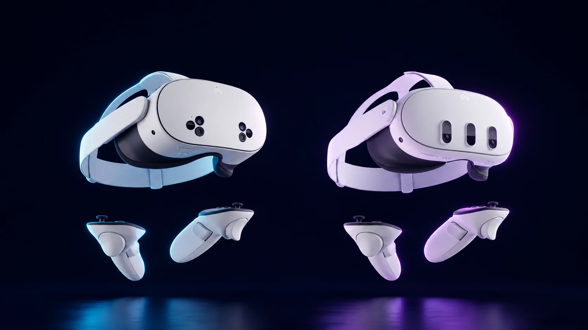

Quest 3 vs Quest 3S: which one should you actually buy?

If you've narrowed your first VR headset down to a Meta Quest, the easy decision is already made. What's left is the $250 question splitting the two models that look almost identical on the shelf: the Quest 3S at $349 and the Quest 3 at $599. Spend the extra money, or don't?
Here's the short version. They run the same chip and play the exact same games, so you are not buying performance. You're buying clarity.
What the extra $250 buys is the optics. The Quest 3 uses pancake lenses and a 2064×2208-per-eye display; the 3S carries over the older Fresnel lenses from the Quest 2 era at 1832×1920. In plain terms, the Quest 3 has a bigger "sweet spot" — the zone where the image stays crisp — and the picture holds up closer to the edges. The 3S looks great dead center and softens as your eyes drift outward. In fast, physical games you may barely notice. For reading text, watching a movie, or anything where you're staring at fine detail, the difference is real and you feel it within minutes.
The Quest 3 also has better passthrough — the cameras that show you the real room — plus a depth sensor the 3S lacks. If mixed reality (apps and games layered over your actual living room) is a big part of why VR appeals to you, that gap matters. If you mostly want to be somewhere else entirely, it matters less.
Now the part that saves people from overthinking it: nearly everything else is identical. Same Snapdragon XR2 Gen 2 processor, same 8GB of RAM, same Touch Plus controllers, and — this is the one people get wrong — the same complete game library. There is no Quest 3 exclusive. Beat Saber, Gorilla Tag, Batman: Arkham Shadow, Asgard's Wrath 2: all of it runs on the 3S too. If a friend tells you a game "needs the Quest 3," they're mistaken. Both also connect to a gaming PC for PCVR, over a cable or wirelessly. The 3S even squeezes out maybe 15 to 20 minutes more battery per charge, because a lower-resolution display sips a little less power.
So who should buy which? If this is your first headset, your budget is tight, and you mostly picture yourself playing games in sessions of an hour or so, the Quest 3S is the smart buy — it's the cheapest way into the entire ecosystem and gives you most of the experience. Step up to the Quest 3 if you care about visual clarity, you're drawn to mixed reality, you watch a lot of video in the headset, or you wear it for long stretches where a wider sweet spot means less eye strain.
On storage: the 3S starts at 128GB ($349), which fills up faster than you'd think once you install a few big games; the 256GB version at $449 is the more comfortable pick if you can stretch to it. The Quest 3 comes as a single 512GB model at $599.
Should you wait for a Quest 4? There's no confirmed release, and Meta has signaled it's stretching its hardware cycles rather than shortening them — the gap to the next headset is likely measured in years, not months. Waiting has a real cost: the time you don't spend actually using VR. Whatever you buy now, your games and account carry forward to whatever comes next.
Bottom line: the Quest 3S is the headset to recommend to most first-time buyers, and the Quest 3 is the one to buy if clarity and mixed reality are what pulled you toward VR in the first place. Neither is a mistake. They're the same machine wearing different glasses.
Where to buy
Check the Quest 3S price → Check the Quest 3 price →
Answer 7 quick questions and get a personalized match in 60 seconds.
Take the VR Finder quiz →This guide contains affiliate links. If you buy through them we may earn a commission at no extra cost to you, which helps keep vr.ar free. As an Amazon Associate, vr.ar earns from qualifying purchases. Prices and specifications are subject to change. See our Privacy Policy.